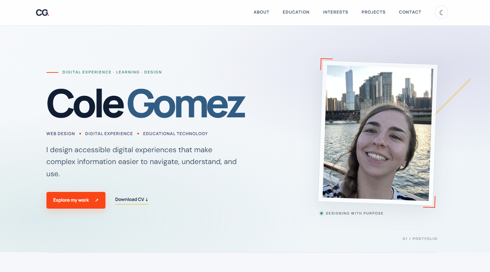
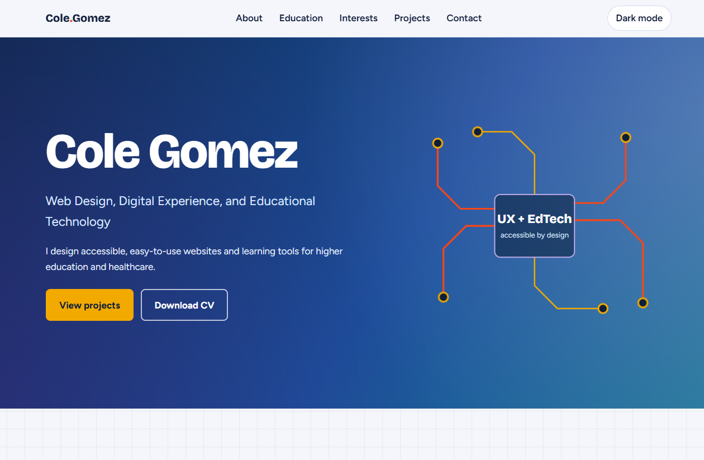

Academic Project · Web Design
E-Portfolio Template
This project explored how HTML, CSS, and AI tools can be used to develop an e-portfolio. I first customized a provided website template through traditional coding, then asked ChatGPT and Claude to generate alternative versions using the same portfolio content and design direction.
Traditional Portfolio Development
I made substantial modifications to the provided HTML and CSS template because I plan to use this portfolio professionally. I wanted to build a foundation I could continue developing throughout the course and my degree rather than create a temporary assignment site.
I replaced the placeholder information with my profile photo, professional biography, education, and personal and professional interests. I also added a resume download button and a contact section with a direct email link.
For the visual design, I changed the color palette to better match my Project 1 logo, updated the fonts to DM Sans and Manrope, and added a watercolor background image. I also redesigned the navigation bar, project cards, buttons, and footer to make the portfolio feel more personal and visually consistent with my other work.
I replaced the original fixed-width, three-column layout with a more flexible structure containing separate sections for my profile, education, interests, projects, and contact information. I adjusted the layout for different screen sizes so the content remains organized on desktop and mobile devices.
I also made accessibility improvements, including descriptive image text, clearer navigation labels, and visible focus outlines for keyboard users. A dark mode toggle changes the site's colors to provide an alternative viewing experience.
Rather than leave blank template cards for future assignments, I included previous professional projects with links to the websites I had worked on. My plan was to expand each project into its own page describing my responsibilities, challenges, and design decisions, so employers could understand the work behind each finished product.

ChatGPT-Generated Portfolio
For the first attempt, I asked ChatGPT to use the HTML and CSS files from my traditionally developed site to create a better, more accessible version. I did not like the color scheme, and the overall design was too similar to my original portfolio, so I tried a different approach.
For the second attempt, I provided the portfolio content and design direction but asked ChatGPT to handle the coding independently, without using my existing site as a template. The result still looked a lot like other websites I had seen ChatGPT generate, so I decided to try the same prompt in a different AI tool.

Claude-Generated Portfolio
I entered the same prompt into Claude, which generated a very different portfolio. Claude's version was much darker overall and incorporated more of the specific design elements I had described. However, it also placed some decorative elements behind the text in ways that created accessibility issues.
Reflection: AI-Assisted Web Design
Through this process, I learned that the AI tool you choose can have a significant impact on the overall design, even when given the same instructions. I also learned how important it is to write a detailed and specific prompt, particularly when communicating design preferences, layout expectations, and accessibility requirements. A well-developed initial prompt can produce a much more usable result than starting with a vague request and relying on dozens of follow-up prompts to gradually correct and refine the output.
I gained a better appreciation for the importance of reviewing AI-generated code rather than assuming that the finished product is automatically functional or accessible. Although AI can generate HTML and CSS much faster than I could write everything from scratch, it still requires human judgment to evaluate the design, identify problems, and make sure the result meets the intended requirements.
Overall, I found it more efficient to provide the AI with all of my content and design expectations upfront and then evaluate the finished product, rather than trying to build the site through an extended series of incremental prompts.